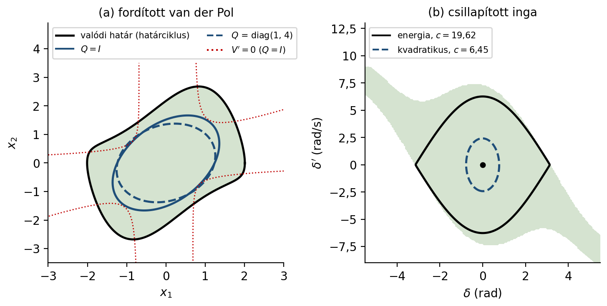

A Fázissík, egyensúlyi pontok és határciklus
alfejezetben a linearizálás megmondta, hogy a csillapított inga lenti
helyzete stabil fókusz. Három fontos kérdés maradt nyitva:
Milyen messzire érvényes ez? Ha az ingát
rad szögből engedjük el, visszatér-e biztosan a lenti helyzetbe?
Mi történik, ha a linearizálás nem dönt (tisztán
képzetes sajátértékek)?
Hogyan bizonyítsuk a stabilitást egy nemlineáris
szabályozónál, amelynek megoldását nem tudjuk képlettel felírni?
Szimulációval minden kezdőpontot nem próbálhatunk ki. Alekszandr
Ljapunov ötlete (1892): ne a megoldást keressük, hanem egy
„energiaszerű” skalárfüggvényt, amely a pálya mentén biztosan nem nő. Ha
ilyet találunk, a megoldás ismerete nélkül is tudjuk, hová jut az
állapot. Ez a modern nemlineáris szabályozás alapeszköze, és lineáris
rendszerre egyetlen mátrixegyenletté egyszerűsödik.
25.2.2 Szemlélet: völgy, amelyben
csak lefelé lehet menni
Képzeld el a
függvényt a fázissík fölötti domborzatként: az egyensúlyi pontban van a
völgy alja
(),
mindenhol máshol magasabb. A szintvonalak
()
zárt görbék a völgy körül. Ha a rendszer pályája a domborzaton mindig
lefelé halad, akkor egy szintvonalon belülről indulva sosem léphet ki
rajta, és végül (megfelelő feltétellel) a völgy aljára ér.
A „lefelé” a
időbeli deriváltja a pálya mentén, a láncszabállyal:
Szavakkal: a domborzat meredekségének és a haladás sebességének
skalárszorzata. Fontos, hogy ehhez nem kell a megoldás:
minden pontban közvetlenül számolható a modell jobb oldalából.
Az inga természetes jelöltje a mechanikai energia (egységnyi
tehetetlenségi nyomatékra):
Mielőtt tovább olvasol, tippeld meg: mennyi
,
és hol nulla?
Statikus változat (mint a PDF-ben)
Az inga fázissíkja két Ljapunov-jelölttel: (a) energia, (b)
kvadratikus függvény a linearizált modellből, pirossal ahol a deriváltja
pozitív; (c) a két függvény ugyanazon pálya mentén
Az (a) panelen a pálya minden energiaszintvonalat kifelől befelé
metsz. A (b) panelen a másik jelölt a pálya egy részén
nő (a piros tartományban), ezért ott semmit nem
bizonyít, pedig a pálya végül ugyanoda tart. A (c) panel mutatja: a
görbe hullámzik, a
sosem emelkedik.
25.2.3 Definíciók
Tegyük fel, hogy az egyensúlyi pont az origó (ha nem, vezessük be a
eltérést), és
,
.
Definíció. Az origó
Ljapunov-stabil, ha minden
-hoz
van olyan
,
hogy
esetén
minden
-ra.
Aszimptotikusan stabil, ha stabil, és a közeli
kezdőpontokból
.
Exponenciálisan stabil, ha valamely
mellett
a közeli kezdőpontokra.
Szavakkal: a stabilitás azt jelenti, hogy kis kezdeti zavar kis
kitérést okoz; az aszimptotikus stabilitás azt, hogy a zavar el is
tűnik; az exponenciális azt, hogy legalább olyan gyorsan, mint egy
elsőrendű rendszer. A csillapítatlan inga lenti helyzete stabil, de nem
aszimptotikusan.
Definíció. A
folytonosan deriválható függvény az origó környezetében pozitív
definit, ha
és
máshol; pozitív szemidefinit, ha
.
Negatív (szemi)definit, ha
pozitív (szemi)definit. Kvadratikus alaknál
()
pontosan akkor pozitív definit, ha
minden sajátértéke pozitív
(-nél:
és
).
25.2.4 A direkt módszer
Tétel (Ljapunov direkt módszere). Ha az origó egy
környezetében van pozitív definit
,
amelyre
a
-ben,
akkor az origó stabil;
a
halmazon, akkor aszimptotikusan stabil;
ráadásul
az egész sík és
esetén
(radiálisan korlátlan), akkor
globálisan aszimptotikusan stabil. [S-KHALIL]
A bizonyítás lényege a szintvonal-kép: ha a
halmaz korlátos és
-ben
van, és ott
,
akkor a belőle induló pálya nem hagyhatja el, hiszen ahhoz
-nek
fölé kellene nőnie. Szigorú
mellett
csökken, és csak
-hoz
tarthat, mert bármely pozitív szint környékén
egy negatív konstansnál kisebb.
A tétel elégséges feltétel: ha egy jelölt nem
teljesíti, az nem bizonyít instabilitást, csak azt, hogy rossz függvényt
választottunk.
25.2.4.1 LaSalle-féle
invariancia-elv
Az ingánál
Az energia csak a súrlódáson fogy, és
nulla az egész
tengelyen, nem csak az origóban. A direkt módszer így csak stabilitást
ad.
Tétel (LaSalle). Legyen
korlátos, pozitívan invariáns (a belőle induló pálya benne marad) és
rajta. Ekkor minden
-ből
induló pálya a
halmaz legnagyobb invariáns részhalmazához tart.
Az invariáns rész: azok a pontok, amelyekből indulva a pálya végig
mellett halad. Ha
,
akkor
,
tehát
.
A
szint alatt a
ágon ez egyetlen pont, az origó. Következtetés: minden,
a
,
halmazból induló pálya az origóhoz tart. A
kezdőpontban
,
tehát a bevezető kérdésre a válasz: igen, visszatér.
25.2.4.2 Hogyan találjunk
Ljapunov-függvényt?
Nincs általános recept, de néhány bevált kiindulópont van:
energia vagy tárolt mennyiség: mechanikai
rendszerben mozgási + helyzeti energia, villamos körben a tekercsek és
kondenzátorok energiája, tartályban a felhalmozott térfogat eltérésének
négyzete; a disszipáció (súrlódás, ellenállás) adja a negatív
-t;
a linearizált modell
-je:
mindig működik hiperbolikus, stabil egyensúlynál, de óvatos becslést
ad;
tervezés közben: ha a bemenet szabadon választható,
a
-t
rögzítjük, és az
-t
úgy választjuk meg, hogy
legyen. Ezt a gondolatot (vezérlő Ljapunov-függvény) használja a
csúszómódú szabályozás.
Példa a harmadikra:
,
,
.
Az
választás
-et
ad (globális exponenciális stabilitás). Az
is jó, sőt robusztusabb a nemlinearitás becslésének hibájára:
.
Tárgyaláson kívül marad két fontos irány: a konverz
tételek (stabil rendszernek mindig van Ljapunov-függvénye) és a
bemenet–állapot stabilitás (ISS), valamint a
polinomiális rendszerekre gépi keresést adó SOS-programozás
[S-KHALIL].
25.2.5 Lineáris rendszerek: a
Ljapunov-egyenlet
Legyen
és
.
A derivált:
Ha előírjuk, hogy
legyen valamilyen választott
(pozitív definit) mátrixszal, a
ismeretlenre lineáris mátrixegyenletet kapunk:
Ez a Ljapunov-egyenlet. A logika fordított a
szokásoshoz képest: nem
-t
választunk és ellenőrizzük
-t,
hanem
-t
írjuk elő, és kiszámítjuk
-t.
Tétel. Az
minden sajátértékének valós része negatív pontosan akkor, ha tetszőleges
mellett a Ljapunov-egyenletnek egyetlen
megoldása van, és
.
Indoklás. Ha
és
,
a direkt módszer globális aszimptotikus stabilitást ad, tehát a
sajátértékek a bal félsíkban vannak. Fordítva, stabil
-ra
legyen
Az integrál konvergens, mert az exponenciálisok lecsengenek, és
Az integrál jelentése is érdekes:
,
vagyis a
azt méri, mennyi „költség” gyűlik még össze az
állapotból. Ugyanez a gondolat tér vissza értékfüggvényként (Az optimális szabályozási feladat és az LQR). Az
egyenlet egyértelműen megoldható, ha semelyik két sajátértékre nem
teljesül
.
A
becslésből exponenciális korlát is következik:
,
.
25.2.5.1 Mennyi modellhibát bír el
a bizonyítás?
A Ljapunov-függvény robusztussági tartalékot is ad.
Tegyük fel, hogy a valódi rendszer
,
ahol a
ismeretlen zavaró tagra csak annyit tudunk, hogy
.
Ugyanazzal a
-vel:
A stabilitás tehát biztosan megmarad, ha
.
Szavakkal: minél kisebb a
(minél gyorsabban fogy a „költség”) a
-hoz
képest, annál nagyobb hibát tűr a rendszer. Az alábbi kézi példában ez
.
A korlát elégséges, ezért a valódi tűrés ennél nagyobb is lehet.
25.2.6 Indirekt módszer és a
vonzási tartomány
Tétel (indirekt módszer). Ha a Jacobi-mátrix
(
az origóban) minden sajátértéke a bal félsíkban van, az origó a
nemlineáris rendszerben is (lokálisan) exponenciálisan stabil; ha
valamelyik a jobb félsíkban van, instabil. Képzetes tengelyen lévő
sajátértéknél (és pozitív nélkül) nem dönt.
A bizonyítás konstruktív: a linearizált rendszer
-jével
deriváltja
plusz magasabb rendű tagok, amelyek kis környezetben nem tudják
felülírni a negatív kvadratikus tagot. Ebből egy becslés adódik a
vonzási tartományra (region of attraction, ROA), azaz
azokra a kezdőpontokra, ahonnan az állapot az egyensúlyhoz tart:
válasszunk
-t
(energia vagy a Ljapunov-egyenlet megoldása);
keressük a legnagyobb
-t,
amelyre a
halmaz korlátos, és rajta (az origón kívül)
;
a
halmaz a vonzási tartomány belső (óvatos)
becslése.

A becsült és a szimulált vonzási tartomány: (a) fordított
idejű van der Pol két Q választással; (b) csillapított inga energia- és
kvadratikus becsléssel
Az (a) panelen az időben visszafelé futtatott van der Pol-rendszer
stabil origójának tartománya pontosan a határciklus belseje. A
becslés a területének kb. 47%-át fedi le; más
más alakú ellipszist ad. A (b) panelen az energia sokkal nagyobb
tartományt igazol, mint a linearizálásból kapott
:
a jó Ljapunov-függvény a rendszer szerkezetét tükrözi. Még az
energiabecslés sem a teljes tartomány: a ferde nyúlványokból indulva az
inga nagy sebességgel érkezik a lenti helyzet közelébe, és a súrlódás
ott elnyeli az energiát.
25.2.7 Kézi számpélda
Legyen
,
,
és
.
Számítsuk ki:
A
mátrixszal egyenlővé téve elemenként:
Ellenőrzés:
,
,
tehát
pozitív definit, a rendszer stabil (a sajátértékek valóban
és
).
A sajátértékei
,
azaz
és
.
Innen
:
,
és mivel
,
Az
pontból
,
a korlát
s-nál
,
a valódi érték
:
a becslés igaz, de óvatos, mert a leggyorsabb csökkenést nem veszi
figyelembe.
25.2.8 Kód
A controlkit.nonlinear.solve_lyapunov a
Ljapunov-egyenletet Kronecker-szorzatos lineáris egyenletrendszerként
oldja meg. A SciPy megfelelője,
scipy.linalg.solve_continuous_lyapunov(a, q) az
alakot oldja meg, ezért
,
a helyes hívás:
import numpy as npfrom scipy import linalgfrom controlkit import nonlinear as nlA = np.array([[0.0, 1.0], [-2.0, -3.0]])P = nl.solve_lyapunov(A) # A^T P + P A = -IP_sp = linalg.solve_continuous_lyapunov(A.T, -np.eye(2))print(P, "pozitív definit:", nl.is_positive_definite(P))print("eltérés a SciPy-tól:", f"{np.max(np.abs(P - P_sp)):.1e}")print("sajátértékek P:", np.round(np.linalg.eigvalsh(P), 3))
[[1.25 0.25]
[0.25 0.25]] pozitív definit: True
eltérés a SciPy-tól: 2.2e-16
sajátértékek P: [0.191 1.309]
A vonzási tartomány becslése rácson történik:
estimate_roa megkeresi a legkisebb
-értéket
ott, ahol
(vagy strict=False esetén
),
és ezt a téglalap pereme is korlátozza. Ez numerikus
becslés, nem bizonyítás; a rácson kívüli viselkedést nem
látja.
Energia-jelöltnél húzd a kezdőpontot a vastag (becslés) görbén
belülre és kívülre. Belülről minden pálya az origóba fut. Indíts nagy
sebességgel kívülről (pl.
,
):
az inga kétszer átfordul, az állapotsor végső
értéke
környékén van, azaz egy másik (azonos fizikai helyzetű) egyensúlyhoz
tartott.
Váltsd a jelöltet kvadratikusra. Keress olyan kezdőpontot, ahol
,
mégis visszatér az inga. Mit mond ez a tétel „elégséges” voltáról?
Csökkentsd a csillapítást
-ra
(energia):
,
a pálya zárt görbe, a stabilitás megmarad, az aszimptotikus stabilitás
nem. A kvadratikus jelöltnél miért tűnik el a megoldás?
Növeld
-t
-ra
a kvadratikus jelöltnél, és figyeld, hogyan változik a
becslés és a piros tartomány.
25.2.10 Tipikus hibák
„
valahol pozitív, tehát instabil.” Tünet: stabil rendszert
instabilnak minősítesz. Ok: a tétel elégséges, nem szükséges. Javítás:
próbálj más
-t
(energia, linearizálásból számolt
,
más
).
LaSalle nélkül aszimptotikus stabilitást állítani
szemidefinit
mellett. Tünet: csillapítatlan rendszerre is „bizonyítod” a
konvergenciát. Ok:
halmazon a pálya maradhat. Javítás: keresd meg a legnagyobb invariáns
részt.
A vonzási tartományt a
halmazzal azonosítani. Tünet: onnan indított pálya elszökik.
Ok: a
tartomány nem invariáns; csak a benne lévő korlátos szinthalmaz az.
Javítás: a legnagyobb olyan
,
amely teljesen
területen van.
A SciPy-hívás argumentumainak felcserélése. Tünet:
nem teljesíti az egyenletet vagy nem szimmetrikus eredményre számítasz.
Ok: a SciPy
-t
old meg. Javítás: solve_continuous_lyapunov(A.T, -Q), és
ellenőrizd a maradékot.
A rácsos becslést bizonyításnak tekinteni. Javítás:
mondd ki, hogy numerikus; kritikus alkalmazásnál analitikus vagy
intervallumos igazolás kell.
25.2.11 Önellenőrzés
Mi a különbség a stabilitás és az aszimptotikus stabilitás
között?
Miért nem kell ismerni a megoldást
kiszámításához?
Mikor és hogyan segít a LaSalle-elv?
Mit jelent, ha a Ljapunov-egyenlet megoldása nem pozitív definit
(pozitív definit
mellett)?
Mit ad a
halmaz, és mit nem?
25.2.12 Feladatok
(A) Az
skalár rendszerre válaszd
-et.
Mekkora vonzási tartományt igazol? Pontos-e a becslés?
(A) Oldd meg kézzel az
egyenletet
-re,
és ellenőrizd a pozitív definitséget.
(B) Mutasd meg a LaSalle-elvvel, hogy az
,
rendszer origója globálisan aszimptotikusan stabil, noha a linearizálás
nem dönt.
(B) A felső helyzetben az inga:
,
a szabályozó
.
Válaszd a
függvényt, és add meg, milyen
,
mellett globálisan aszimptotikusan stabil a zárt kör.
(B) A fordított van der Pol-nál a
ellipszisbe írható legnagyobb origó körüli kör sugara mekkora?
(C, programozós) A fordított van der Pol-ra válaszd
-t,
és keresd meg azt a
-t,
amely a legnagyobb területű becslést adja (terület:
).
(C) Mi történik a Ljapunov-egyenlettel
,
esetén? Mit bizonyít az eredmény?
25.2.13 Rövid összefoglaló
Ljapunov direkt módszere a megoldás ismerete nélkül bizonyít
stabilitást: pozitív definit
,
amelynek pálya menti deriváltja
(stabil), illetve
(aszimptotikusan stabil). Szemidefinit
esetén a LaSalle-elv: a pálya a
halmaz legnagyobb invariáns részéhez tart. Lineáris rendszerre a
Ljapunov-egyenlet pozitív definit megoldása pontosan a stabil
esetén létezik. A vonzási tartomány belső becslése a legnagyobb,
területen lévő
szinthalmaz; ez numerikusan számolható, de óvatos, és erősen függ
megválasztásától.
25.2.14 Megoldások
,
ha
:
a
a vonzási tartományban van. Pontos is, mert
egyensúlyi pontok, onnan nem tér vissza.
A bal felső elem:
,
tehát
;
a vegyes elem:
,
tehát
;
a jobb alsó:
,
tehát
.
és
:
pozitív definit.
,
.
-n
,
ekkor
:
az invariáns rész csak az origó.
radiálisan korlátlan, tehát globális.
Behelyettesítve
-t:
Mivel
,
,
tehát
mellett pozitív definit és radiálisan korlátlan.
mellett
-n
,
így
,
ami
esetén csak
(mert
).
Globálisan aszimptotikusan stabil (modellhiba és telítés
nélkül).
Az
sugarú körön
,
ezért a kör akkor van biztosan az ellipszisben, ha
:
.
Ciklus
fölött: P = nl.solve_lyapunov(A, np.diag([1, q])), majd
estimate_roa és a terület.
területe
;
finomabb kereséssel a maximum
-nél
,
a valódi tartomány
területének kb. fele. Több ellipszis uniója nagyobb tartományt fed
le.
A bal felső elemből
,
;
a jobb alsóból
,
;
.
indefinit: a tétel szerint
nem stabil (itt valóban van
sajátérték).
25.2.14.1 Válaszok az önellenőrző
kérdésekre
Stabilitásnál a kis zavar kicsi marad; aszimptotikusnál ráadásul el
is tűnik.
a modell jobb oldalából pontonként számolható.
Ha
csak szemidefinit: a
halmaz legnagyobb invariáns részét kell megvizsgálni.
Az
nem stabil (van nemnegatív valós részű sajátértéke).
Belső, garantáltan jó becslést a modellre nézve; nem a teljes
tartományt, és modellhibára önmagában nem érvényes.